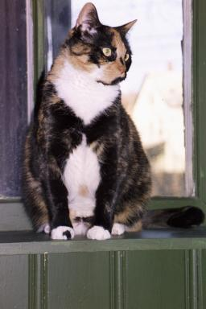
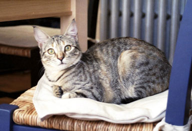

The Cats
I have two cats:
Pixel
arrived November 11, 2002 She was adopted from the
Sterling Shelter
.
Aphra
arrived in 1994.
Other cats that have been in my house in the past are:
Fergus
arrived October 2000. He wandered off in September of 2002.
Matzo
Heccat
1994 - 2000


Aphra
Pixel